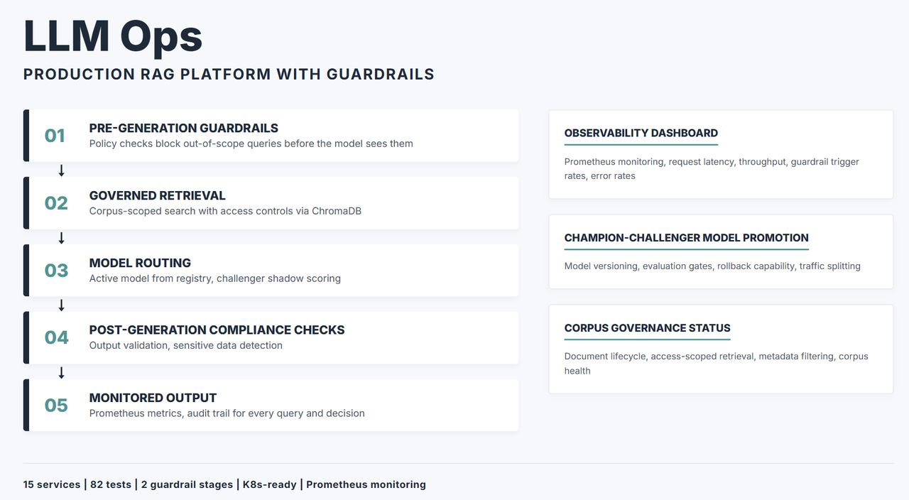

The Problem
Deploying an LLM in a regulated environment comes with a lot of requirements beyond retrieval and generation: policy guardrails to reject out-of-scope queries, corpus controls to prevent documents from leaking across clearance boundaries, audit trails for every query and retrieval decision, and a model promotion process with proper evaluation gates. I built this to work through those problems — who controls the documents, who reviews the outputs, how you roll back a bad model, and how you show an auditor what happened.
Unsafe or out-of-scope queries are blocked before generation — the model never sees them
Every query, ingestion, promotion, and rollback emits a traceable event with version history
Coverage across the full flow — from corpus ingestion through query to model promotion
The Approach
The platform separates concerns that most RAG demos lump together. Queries pass through policy checks before and after generation. Documents go through a governed corpus layer with access controls. Models are versioned and promoted only after passing evaluation gates. Every query, ingestion, and promotion emits an audit event and a Prometheus metric. The goal is a system where an operator can answer "what happened and why" at any point — every query, retrieved chunk set, guardrail decision, model version, and promotion event is logged as an auditable record.
How an Operator Uses This
- Ingest approved documents into the governed corpus with access classification
- User submits a query via REST API
- Pre-generation policy checks run — out-of-scope or injection attempts are blocked
- Retrieval is scoped to the user's authorised document set
- Active model generates a grounded answer
- Post-generation compliance checks validate the response
- Audit event and Prometheus metrics emitted
- When a new model is ready, it is evaluated against the champion — promoted only if it passes the gate
Architecture
Policy Guardrails
The platform implements a two-stage guardrail system that enforces content policies both before and after LLM generation:
Input policy checks
Incoming queries are evaluated against configurable policy rules before retrieval begins. This includes topic restriction enforcement, prompt injection detection, and scope validation -- ensuring the system only processes queries within its authorised domain. Rejected queries receive structured refusal responses with policy violation codes.
Output compliance checks
Generated responses are validated against output policies before being returned to the client. This includes sensitive information detection, classification marking enforcement, and response format compliance. Violations trigger response modification or blocking with audit logging.
Corpus Governance
In government and regulated environments, controlling what documents the RAG system can access is as important as the quality of retrieval. The corpus governance layer provides:
- Document lifecycle management -- controlled ingestion, versioning, and retirement of corpus documents with audit trails
- Access-scoped retrieval -- queries are scoped to authorised document collections, preventing information leakage across classification boundaries
- Metadata-driven filtering -- retrieval can be constrained by document attributes (date, classification, source, department) at query time
- Corpus health monitoring -- metrics on document freshness, coverage gaps, and index consistency
Model Registry and Champion-Challenger
The platform maintains a model registry that tracks all deployed and candidate models. Model transitions follow a champion-challenger process:
- Model versioning -- each model configuration (provider, parameters, prompt templates) is versioned and immutable once registered
- Challenger evaluation -- new models are evaluated against the current champion on a held-out evaluation set before promotion
- Traffic splitting -- configurable percentage of traffic can be routed to challenger models for shadow evaluation in production
- Rollback capability -- instant rollback to previous champion if the new model degrades in production
Monitoring and Observability
Production AI systems require continuous monitoring beyond application-level health checks. The platform exposes Prometheus metrics covering:
- Request metrics -- latency percentiles, throughput, error rates, and status code distributions
- Retrieval quality signals -- average retrieval scores, zero-result rates, and corpus hit ratios
- Generation metrics -- token usage, generation latency, and guardrail trigger rates
- System health -- vector index status, model availability, and dependency health checks
What I Learned
A few things I ran into while building this:
-
Never trust user-provided roles for access control. An early version accepted the user's role directly from the request body -- any user could POST
{"role": "admin"}to bypass document classification. The fix: resolve roles server-side from authenticated credentials, never from user input. This was the most important security lesson of the project. -
Define interfaces AND use them. I defined Protocol-based ports in
domain/ports.pybut initially forgot to actually inject them into services. Unused interfaces are worse than none -- they create a gap between documentation claims and reality. Every interface now has at least one test with a fake implementation. - TF-IDF verification is a starting point, not a solution. The grounding check measures vocabulary overlap, not semantic entailment. An answer that contradicts the evidence but uses the same words would score high. I document this limitation honestly and describe the upgrade path (NLI models, claim extraction).
-
Audit logging must be wired up, not just defined. Defining
AuditLogger.log_event()is not the same as calling it. I initially had the logger defined but never invoked on the query path. Now every state-changing operation (queries, ingestion, model promotion, corpus changes) emits an audit event. - Be transparent about what is simulated. The fine-tuning pipeline is a workflow contract, not actual training. I call this out explicitly in the limitations because pretending otherwise would be dishonest.
Limitations
- Authentication is API-key-based, not JWT/OAuth — production would need integration with an identity provider like Keycloak or Azure AD
- Grounding verification uses TF-IDF similarity, not NLI — it checks vocabulary overlap, not semantic entailment. Upgrade path to NLI is documented
- Fine-tuning pipeline is a workflow contract, not actual GPU training — it demonstrates orchestration (dataset validation, recipe parsing, promotion gates) with the training step clearly marked as an integration point
- Kubernetes manifests are deployment-ready scaffolds, not a live production cluster — they define resource limits, health probes, and PVCs but have not been tested at scale
- Single-node deployment only — scaling requires migrating to client-server vector DB, distributed job queue, and shared model registry
Tech Stack
- Application: Python, FastAPI, Pydantic v2
- Vector Store: ChromaDB, sentence-transformers
- Monitoring: Prometheus, structured logging
- Infrastructure: Docker, Kubernetes manifests, environment variable configuration
Project Information
- CategoryProduction RAG -- AI Governance -- MLOps
- Year2026
- StackPython -- FastAPI -- ChromaDB -- sentence-transformers -- Docker -- Kubernetes
- GitHub josephhzy/LLMOps